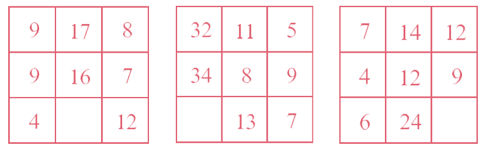
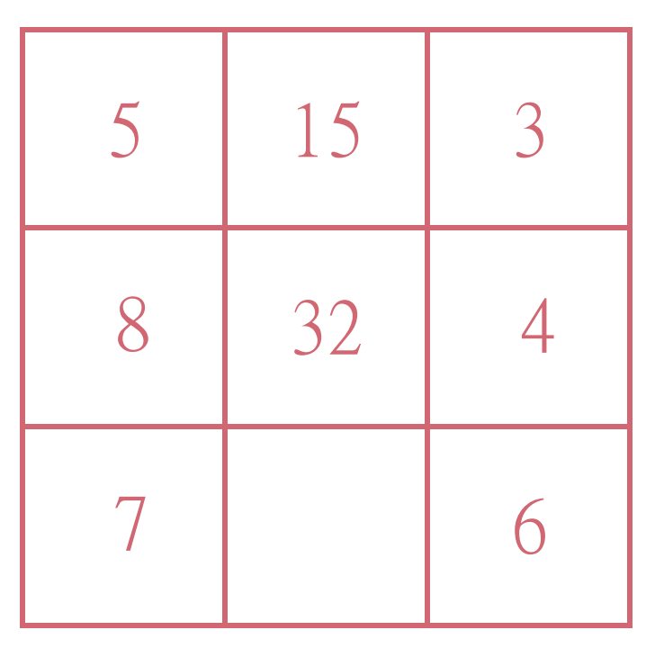
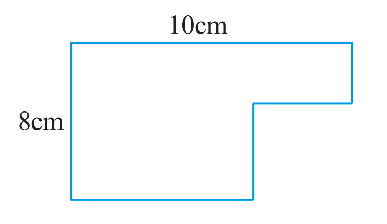
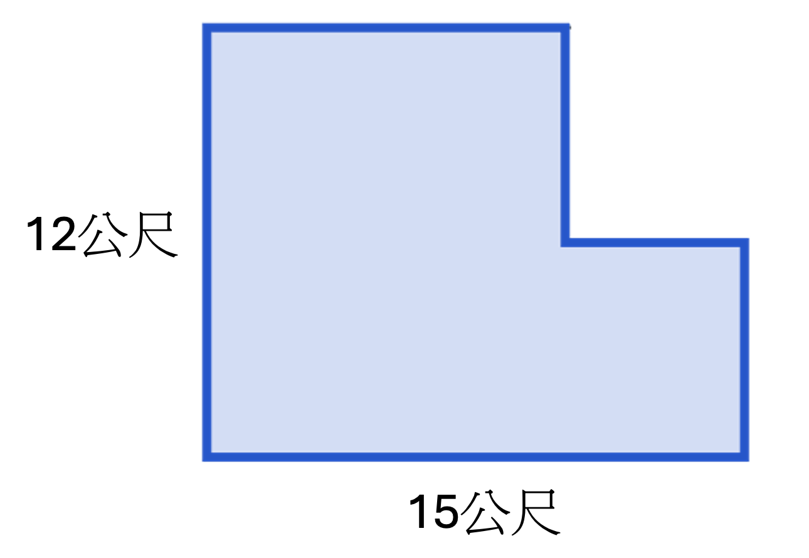
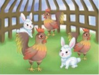

觀察行或列中數之間的關係，在空白處填上適當的數。

想出來了嗎？點擊下方按鈕解鎖分析與解答！
樂兒在玩九宮格填數遊戲，她發現這些數字藏著一個秘密：

請問這個空格應該填入多少？想出來了嗎？點擊下方按鈕解鎖分析與解答！
求下圖中圖形的周長：

想出來了嗎？點擊下方按鈕解鎖分析與解答！
子安的家有一個 L 形的小花園，如下圖所示（最長邊為 15 公尺，最寬邊為 12 公尺）。為了防止小狗跑進去，子安想在花園的周圍圍上一圈柵欄，請問需要多長的柵欄？

想出來了嗎？點擊下方按鈕解鎖分析與解答！
求 $125 \times 64 \times 5 \times 25$ ＝？
想出來了嗎？點擊下方按鈕解鎖分析與解答！
少傑在計算一道數學題：$25 \times 32 \times 125 \times 2 = \text{？}$ 請你用巧算的方法幫他快速算出答案。
想出來了嗎？點擊下方按鈕解鎖分析與解答！
有一列數：2，3，6，8，8，……從第三個數起，每個數都是前兩個數乘積的個位數字，那麼這列數中第 80 個數應是（ ）。
想出來了嗎？點擊下方按鈕解鎖分析與解答！
佩文在紙上畫了一串圖形：★、●、▲、■、★、●、▲、■…… 如果她一直按照這個規律畫下去，請問第 55 個圖形是什麼？
想出來了嗎？點擊下方按鈕解鎖分析與解答！
如果 $A \# B = A \times B + A + B$，且 $(A \# 2) \# 1 = 29$，那麼 $A =$（ ）。
想出來了嗎？點擊下方按鈕解鎖分析與解答！
樂兒發明了一個新符號「@」，規定：甲 @ 乙 = 甲 × 3 - 乙。如果 $5 @ (4 @ \text{子安}) = 11$，請問「子安」代表的數字是多少？
想出來了嗎？點擊下方按鈕解鎖分析與解答！
甲、乙兩人同時沿著同一條路相向而行，甲的速率是乙的 3 倍，已知甲上午八時三十分經過文華文具店門口，乙上午十時三十分經過文華文具店門口，那麼甲、乙兩人（ ）時（ ）分在途中相遇。
想出來了嗎？點擊下方按鈕解鎖分析與解答！
少傑和佩文從一條筆直道路的兩端同時出發、相向而行。少傑的步行速度是佩文的 2 倍。如果他們一開始相距 1800 公尺，請問當他們相遇時，少傑一共走了多少公尺？
想出來了嗎？點擊下方按鈕解鎖分析與解答！
“和平”號輪船在靜水中的速度是每小時 15 公里，逆水航行 11 小時，行了 88 公里。那麼“和平”號輪船返回原地需要多少小時？
想出來了嗎？點擊下方按鈕解鎖分析與解答！
子安駕駛一艘遙控小船在小河中測試。這艘船在靜水中的速度是每分鐘 50 公尺。它順水航行了 4 分鐘，一共走了 240 公尺。請問這艘船如果原路逆水返回起點，需要多少分鐘？
想出來了嗎？點擊下方按鈕解鎖分析與解答！
大學某系新生分配宿舍，每間房住 6 人，則會空出 3 間房；每間房住 4 人，則會多出 24 人。那麼宿舍有多少間？新生有多少人？
想出來了嗎？點擊下方按鈕解鎖分析與解答！
樂兒買了一大包糖果分給班上的好朋友。如果每人分 5 顆，會剩下 12 顆；如果每人分 8 顆，就會不夠 15 顆。請問樂兒總共有幾個好朋友？糖果總共有幾顆？
想出來了嗎？點擊下方按鈕解鎖分析與解答！
在一個籠子裡有一些雞和兔子，雞比兔多 28 隻，它們共有 272 隻腳。請問這個籠子裡有雞多少隻？有兔子多少隻？

想出來了嗎？點擊下方按鈕解鎖分析與解答！
少傑的農場裡養了豬和鴨子。已知鴨子比豬多 15 隻，全部動物共有 150 隻腳。請問農場裡有幾隻豬？幾隻鴨子？
想出來了嗎？點擊下方按鈕解鎖分析與解答！